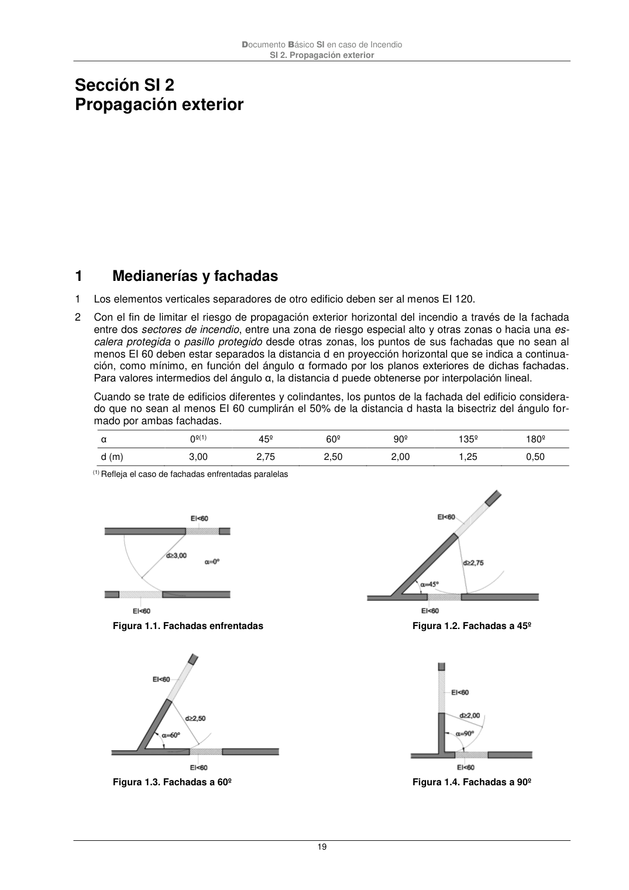
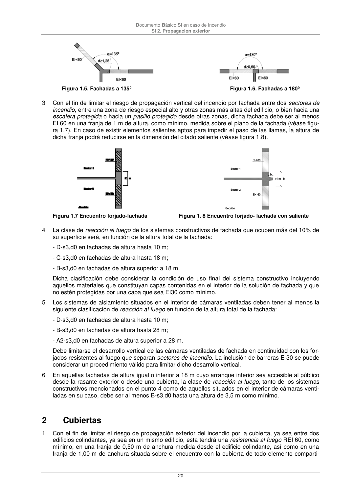

DB-SI · 1 Medianerías y fachadas · versión 2025-03-04 · capa oficial
Formatos: JSON compacto · Markdown · PDF fuente
Ámbito del documento · texto del ámbito · documento y tablas
ID técnico a0046 · PDF pág. 19-20 · jerarquía no validada por persona · contrastado con el literal de la página 19 (marcador PDF); no validado por persona · padre: a0045
Medianerías y fachadas 1 Los elementos verticales separadores de otro edificio deben ser al menos EI 120. 2 Con el fin de limitar el riesgo de propagación exterior horizontal del incendio a través de la fachada entre dos sectores de incendio, entre una zona de riesgo especial alto y otras zonas o hacia una es- calera protegida o pasillo protegido desde otras zonas, los puntos de sus fachadas que no sean al menos EI 60 deben estar separados la distancia d en proyección horizontal que se indica a continua- ción, como mínimo, en función del ángulo α formado por los planos exteriores de dichas fachadas. Para valores intermedios del ángulo α, la distancia d puede obtenerse por interpolación lineal. Cuando se trate de edificios diferentes y colindantes, los puntos de la fachada del edificio considera- do que no sean al menos EI 60 cumplirán el 50% de la distancia d hasta la bisectriz del ángulo for- mado por ambas fachadas. α 0º(1) 45º 60º 90º 135º 180º d (m) 3,00 2,75 2,50 2,00 1,25 0,50 (1) Refleja el caso de fachadas enfrentadas paralelas Figura 1.1. Fachadas enfrentadas Figura 1.2. Fachadas a 45º Figura 1.3. Fachadas a 60º Figura 1.4. Fachadas a 90º Documento Básico SI en caso de Incendio SI 2. Propagación exterior 20 Figura 1.5. Fachadas a 135º Figura 1.6. Fachadas a 180º 3 Con el fin de limitar el riesgo de propagación vertical del incendio por fachada entre dos sectores de incendio, entre una zona de riesgo especial alto y otras zonas más altas del edificio, o bien hacia una escalera protegida o hacia un pasillo protegido desde otras zonas, dicha fachada debe ser al menos EI 60en una franja de 1 m de altura, como mínimo, medida sobre el plano de la fachada (véase figu- ra 1.7). En caso de existir elementos salientes aptos para impedir el paso de las llamas, la altura de dicha franja podrá reducirse en la dimensión del citado saliente (véase figura 1.8). Figura 1.7 Encuentro forjado-fachada Figura 1. 8 Encuentro forjado- fachada con saliente 4 La clase de reacción al fuego de los sistemas constructivos de fachada que ocupen más del 10% de su superficie será, en función de la altura total de la fachada: - D-s3,d0 en fachadas de altura hasta 10 m; - C-s3,d0 en fachadas de altura hasta 18 m; - B-s3,d0 en fachadas de altura superior a 18 m. Dicha clasificación debe considerar la condición de uso final del sistema constructivo incluyendo aquellos materiales que constituyan capas contenidas en el interior de la solución de fachada y que no estén protegidas por una capa que sea EI30 como mínimo. 5 Los sistemas de aislamiento situados en el interior de cámaras ventiladas deben tener al menos la siguiente clasificación de reacción al fuego en función de la altura total de la fachada: - D-s3,d0 en fachadas de altura hasta 10 m; - B-s3,d0 en fachadas de altura hasta 28 m; - A2-s3,d0 en fachadas de altura superior a 28 m. Debe limitarse el desarrollo vertical de las cámaras ventiladas de fachada en continuidad con los for- jados resistentes al fuego que separan sectores de incendio. La inclusión de barreras E 30 se puede considerar un procedimiento válido para limitar dicho desarrollo vertical. 6 En aquellas fachadas de altura igual o inferior a 18 m cuyo arranque inferior sea accesible al público desde la rasante exterior o desde una cubierta, la clase de reacción al fuego, tanto de los sistemas constructivos mencionados en el punto 4 como de aquellos situados en el interior de cámaras venti- ladas en su caso, debe ser al menos B-s3,d0 hasta una altura de 3,5 m como mínimo. 2


PDF fuente redistribuible: copia fiel enlazada en esta página (SHA256 verificado).